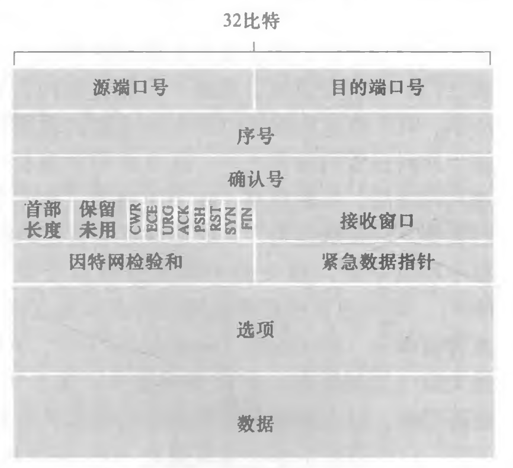

计算机网络期末复习
Last updated on June 9, 2025 pm
这是SJTU-CS3611《计算机网络》课程的期末复习。
考点按重要性排序为：了解 < 熟悉 < 理解
第一章：计算机网络与因特网
1. 协议三要素（了解）
- 语法：数据与控制信息的格式
- 语义：需要发出何种控制信息、完成何种动作及做出何种应答（做什么？）
- 时序：执行各种操作的条件、时序关系等，即事件实现顺序的详细说明（什么时候做？）
2. TCP/IP 和 OSI 模型的具体结构和区别（理解）
- ISO/OSI 模型结构：
| 模型层次 | 任务 | 功能 | 传输单位 |
|---|---|---|---|
| 应用层 | 实现特定网络应用 | - | 报文 |
| 表示层 | 解决不同主机上信息表示不一致的问题 | 数据格式转换（编码转换、压缩解压、加密解密等） | - |
| 会话层 | 管理进程间会话 | 会话管理（检查点机制，可断点续传） | - |
| 传输层 | 实现端到端（进程到进程）通信 | 复用和分用、差错控制、流量控制、连接管理、可靠传输管理 | 报文段 |
| 网络层 | 把分组从源结点转发到目的结点 | 路由选择、分组转发、拥塞控制、网际互联、差错控制、流量控制、连接管理、可靠传输管理 | 数据报（分组） |
| 链路层 | 确保相邻节点之间的链路逻辑上无差错 | 差错控制、流量控制 | 帧 |
| 物理层 | 实现相邻节点之间比特的传输 | 需定义电路接口参数、信号的含义和电气特性等 | 比特 |
- TCP/IP 模型结构：
| 模型层次 | 任务 | 功能 |
|---|---|---|
| 应用层 | 实现特定网络应用 | - |
| 传输层 | 实现端到端（进程到进程）通信 | 复用和分用、差错控制、流量控制、连接管理、可靠传输管理 |
| 网络层 | 把分组从源结点转发到目的结点 | 路由选择、分组转发、拥塞控制、网际互联 |
| 网络接口层 | 实现相邻结点之间的数据传输 | 无具体规定 |
- 区别：
- 分层：TCP/IP 模型将 OSI 表示层和会话层的功能合并到了应用层，还将链路层和物理层合并为网络接口层
- 服务：OSI 网络层可向上层提供有连接可靠的服务（虚电路）和无连接不可靠的服务（数据报），而 TCP/IP 网络层仅提供无连接不可靠的服务（数据报）；OSI 传输层仅向上层提供有连接可靠的服务，而 TCP/IP 传输层可提供有连接可靠的服务（TCP 协议）和无连接不可靠的服务（UDP 协议）
- 设计目标：OSI 是理论化的通用标准；TCP/IP 以实际应用为导向
- 灵活性：OSI 结构复杂，缺乏市场和商业动力；TCP/IP 模型结构简单，灵活性更强
3. 常见网络攻击类型：DoS 攻击，IP spoofing（了解）
- DoS 攻击（拒绝服务攻击）：攻击者通过使用伪造的流量攻击资源（服务器/带宽），来使得合法流量无法使用资源
- 攻击目标：Web 服务器、电子邮件服务器、DNS服务器、机构网络
- 攻击方式：弱点攻击、带宽洪泛、连接洪泛
- DDoS 攻击：即分布式 DoS 攻击，攻击者控制由受害主机组成的僵尸网络向目标猛烈发送流量
- IP spoofing（IP 欺骗）：注入带错误源地址的数据包
4. 各种时延以及吞吐量计算（熟悉）
-
各种时延计算：
时延类型 定义 计算公式 传输时延 将分组推送到链路的时间 数据包长度 / 链路速率 传播时延 比特在链路上的传播时间 物理链路长度 / 传播速度 处理时延 交换节点处理分组的时间
（分析首部、差错检验、查找路由等）固定微秒级，可忽略 排队时延 分组在路由器队列中等待的时间 - - 流量强度：
- : 分组长度（bits）
- : 分组到达速率（packets/s）
- : 链路带宽（bps）
- 排队时延：
- 流量强度接近 0，平均排队时延小
- 流量强度趋近 1，平均排队时延迅速增加
- 流量强度大于 1，平均排队时延无穷大
- 流量强度：
-
吞吐量计算：
- 定义：比特从发送方发送到接收方的速率（bps）
- 计算：
5. 分组交换和电路交换的对比（熟悉）
-
电路交换：
- 特点：建立专用物理信道、预留端到端带宽、无存储转发时延
- 优点：通信时延小、有序传输、没有冲突、实时性强
- 缺点：建立连接时间长、线路利用率低、灵活性差、无差错控制
-
分组交换：
- 特点：存储转发（路由器接收完整分组后再转发）
- 优点：无建立连接时延、线路利用率高、灵活分配线路、支持差错控制
- 缺点：存在存储转发时延、需传输额外控制信息、拥塞导致丢包
| 对比项 | 分组交换 | 电路交换 |
|---|---|---|
| 资源分配 | 按需动态分配 | 预先固定分配 |
| 带宽利用率 | 高（共享链路） | 低（独占链路） |
| 适用场景 | 突发性数据 | 实时流（电话） |
| 典型技术 | IP网络 | 传统电话网络 |
第二章：应用层
1. 不同应用程序体系结构的区别：C-S 结构、P2P 结构（熟悉）
- C-S 结构：
- 客户端是服务请求方，服务器是服务提供方
- 服务器：永久在线、固定 IP、集中式管理
- 客户端：间歇性连接、动态 IP、不直接通信
- 网络管理集中方便，但可扩展性不佳
- P2P 结构：
- 无中心服务器，对等方直接通信
- 优点：自我可扩展性强，成本低，健壮性强
- 缺点：管理复杂，存在安全性和可靠性挑战
2. 进程通信的寻址方式（了解）
- 寻址方式：IP 地址（标识主机）+ 端口号（标识进程）
3. 流行的因特网应用及其应用协议和支撑的运输协议。（了解）
| 应用 | 应用层协议 | 支撑的运输协议 |
|---|---|---|
| 电子邮件 | SMTP | TCP |
| 远程终端访问 | Telnet | TCP |
| Web | HTTP | TCP |
| 文件传输 | FTP | TCP |
| 流式多媒体 | HTTP (如YouTube), DASH | TCP |
| 因特网电话 | SIP、RTP 或专用的 (如Skype) | UDP 或 TCP |
4. HTTP 协议的运作方式、持续与非持续连接、报文格式、底层的运输协议、常用 http 响应状态码（理解）
- 运作方式：当用户请求一个 Web 页面时，浏览器向服务器发出对该页面中所包含对象的 HTTP 请求报文，服务器接收到请求并用包含这些对象的 HTTP 响应报文进行响应
- 持续与非持续连接：
- 非持续连接：每个请求/响应对是经一个单独的 TCP 连接发送
- 缺点：服务器负担重、对象交付时延长
- 响应时间：2RTT + 文件传输时间
- 持续连接：所有的请求及其响应经相同的 TCP 连接发送
- 非持续连接：每个请求/响应对是经一个单独的 TCP 连接发送
- 报文格式：
-
请求报文：
- 示例：
1
2
3
4
5GET /somedir/index.html HTTP/1.1 // 请求行: 方法、相对URL、HTTP版本
Host: www.example.com // 服务器域名
Connection: close // 使用非持续连接
User-agent: Mozilla/5.0 // 用户代理（浏览器）
Accept-language: cn // 希望得到的文档语言- 方法：
GET（获取资源）/POST（提交表单）/HEAD（获取首部）/PUT（上传对象）/DELETE（删除对象）
-
响应报文：
- 示例：
1
2
3
4
5
6
7
8
9HTTP/1.1 200 OK // 状态行: HTTP版本、状态码、状态信息
Connection: close // 发送完关闭TCP连接
Date: Tue, 18 Aug 2015 15:44:04 GMT // 该报文发送时间
Server: Apache/2.2.3 (CentOS) // 服务器
Last-Modified: Tue, 18 Aug 2015 15:11:03 GMT // 对象最后修改时间
Content-Length: 6821 // 被发送对象的字节数
Content-Type: text/html // 实体体中对象的类型
(data data data data data ...)
-
- 底层运输协议：TCP
- 常用的响应状态码：
200：请求成功，请求对象在返回的响应报文中301：永久转移，请求对象已移动，新 URL 在Location:首部行中400：错误请求，服务器无法理解请求消息404：未找到，服务器上未找到请求的文档505：HTTP 版本不支持
5. cookie 的作用（熟悉）
- 作用：识别用户身份、维护会话状态
6. 收发电子邮件使用的协议（了解）
- 发件（用户代理->邮件服务器）：SMTP / HTTP
- 邮件服务器->邮件服务器：SMTP
- 收件（邮件服务器->用户代理）：HTTP / IMAP / POP
7. DNS 协议的服务内容、工作机理、服务器结构层次、缓存（理解）
重点：熟记不同 DNS 查询方式的执行过程
-
服务内容：
- 主要任务：进行主机名到 IP 地址的转换
- 主机别名：主机别名 -> 规范主机名以及其 IP 地址
- 邮件服务器别名：邮件服务器主机别名 -> 规范主机名以及其 IP 地址
- 负载分配：在冗余的服务器（多个 IP 地址对应一个规范主机名）之间进行负载分配
-
服务器结构层次：
根DNS顶级域(TLD) DNS（.com/.org）权威DNS -
工作机理：
- 查询过程：
- 主机向本地 DNS 服务器发送 DNS 查询报文
- 本地 DNS 服务器查询本地缓存，若没有该记录，将请求转发到 DNS 层次结构进行解析
- 查询方式：
- 递归查询：上级服务器递归地查询，最终返回目标 IP 地址
- 迭代查询：上级服务器只返回下一级地址
- 客户端到本地 DNS 通常用递归查询
- 查询过程：
-
缓存：
- DNS 服务器能本地存储解析记录，以减少响应时间
- 本地 DNS 服务器还可以缓存 TLD 服务器的 IP 地址
- 缓存条目在 TTL 超时后消失
8. DNS 协议常面临的安全问题：DNS 缓存投毒，DDoS 攻击（了解）
- DNS 缓存投毒：拦截 DNS 查询，返回虚假响应
- DDoS 攻击：向根域名服务器（或顶级域名服务器）发送大量流量
9. 内容分发网络（CDNs）的作用（了解）
- 单一数据中心的挑战：高延迟、单点故障、网络拥塞
- 方案：在多个地理位置的服务器节点缓存内容，将用户请求重定向到最优节点以提升访问速度
- 作用：解决大规模内容分发的带宽压力与延迟问题
第三章：传输层
1. 传输层的通信主体：进程（了解）
- 端到端服务：传输层为不同主机上的进程间提供逻辑通信
2. TCP 和 UDP 通过什么字段寻址：目的端口号；常见应用层协议的默认端口号（熟悉）
-
寻址方式：
- UDP：仅目的端口号
- TCP：源 IP 地址、源端口号、目的 IP 地址、目的端口号
-
常见应用层协议的默认端口号：
应用层协议 FTP Telnet SMTP DNS HTTP SNMP 熟知端口号 21 23 25 53 80 161
3. UDP 协议的特点、使用 UDP 的应用层协议、UDP 报文段结构（熟悉）
-
UDP 的特点：无连接的不可靠服务，面向报文
- 仅有多路复用和差错检测功能
- 缺点：
- 无确认机制：数据报可能丢失
- 无顺序保证：数据报无序交付给应用
- 优点：
- 无需建立连接：降低 RTT 延迟
- 无需维护连接状态：更简单
- 无拥塞控制：可全力发送数据
- 分组首部开销小
-
使用 UDP 的应用层协议：DNS、SNMP、HTTP/3、NFS（远程文件服务器）、流式多媒体
-
UDP 报文段结构：
- 长度：包括首部，以字节为单位
4. 多路复用、多路分解的区别（了解）
- 多路复用：多个应用进程共享传输层服务
- 多路分解：将接收的数据正确交付给目标套接字
5. 可靠数据传输协议的不同版本：ARQ 协议、停等协议（熟悉）
- RDT1.0：经完全可靠信道
- 底层信道完全可靠（无比特错误，无丢包）
- RDT2.0：经具有比特差错信道
- 停止-等待：发送者发送一个数据包，等待接收者响应
- 接收方反馈：采用 ACK / NAK 反馈机制
- 重传：发送者在收到 NAK 时重新传输数据包
- RDT2.1：
- 添加序列号：仅需两个序列号（0 和 1）
- RDT2.2：
- 无 NAK：只使用 ACK 而不使用 NAK
- 接收方必须指定被确认的包的序列号
- RDT3.0：经具有比特差错的丢包信道
- 倒计时计时器：发送方等待一定时间来接收 ACK
- 超时重传：如果在此时间内没有收到 ACK，则重新发送数据包
- ARQ 协议：自动重传协议，包括停等协议、GBN、SR 等
- 停等协议：
- 窗口大小：，
- 确认机制：确认帧 ACK_i
- 重传机制：超时重传
- 帧编号：仅需 1 bit
6. 流水线可靠数据传输协议的运行过程，GBN 和 SR 协议对应的信道利用率计算（理解）
- 后退 N 帧（GBN）：
- 滑动窗口：，
- 累计确认：连续收到多个数据包时，仅返回最后一个数据包的 ACK
- 超时重传：重传超时的数据包及窗口中之后所有的数据包
- 帧编号： bit编号，
- 选择重传（SR）：
- 滑动窗口：
- 确认机制：确认帧 ACK_i 和 否认帧 NAK_i，无累计确认
- 重传机制：超时重传 与 请求重传（收到 NAK_i）
- 帧编号： bit编号，
- 信道利用率：
7. TCP 协议的特点、使用 TCP 的应用层协议、报文段结构、首部各字段含义、确认机制、连接建立过程、连接断开过程（理解）
重点：熟记 TCP 三次握手，四次挥手的流程图
-
TCP 的特点：面向连接的的可靠服务，点对点、全双工、面向字节流
- 可靠性：无差错、不丢失、不重复且有序
-
使用 TCP 的应用层协议：SMTP、Telnet、HTTP、FTP、SSH
-
TCP 报文段结构：

-
首部各字段含义：
- 序号：该报文段首字节的字节流编号
- 文件数据根据 MSS 划分成 TCP 报文段
- 确认号：期望的从对方接收的下一字节的序号（累计确认）
- 首部长度：以 4B 为单位
- 接收窗口：接收方愿意接收的字节数量
- 确认位 ACK：仅当
ACK = 1时确认号字段有效- 只有
握手1的ACK = 0
- 只有
- 同步位 SYN：
SYN = 1表明这是连接请求或接受报文- 只有
握手1和握手2的SYN = 1
- 只有
- 终止位 FIN：
FIN = 1表明请求释放连接- 只有
挥手1和挥手3的FIN = 1
- 只有
- 选项：用于发送方与接收方协商最大报文段长度（MSS）
- 序号：该报文段首字节的字节流编号
-
确认机制：见“首部各字段含义”
-
连接建立过程：三次握手
- 客户端发送 SYN 报文段
SYN = 1，seq = x- 客户端进入 SYN_SENT 状态
- 不携带数据，但消耗一个序号
- 服务器回复 SYNACK 报文段
SYN = 1，seq = y，ACK = 1，ack = x+1- 服务器进入 SYN_RCVD 状态
- 不携带数据，但消耗一个序号
- 客户端发送 ACK 报文段
ACK = 1，seq = x+1，ack = y+1- 客户端进入 ESTABLISHED 状态
- 服务器收到确认后，进入 ESTABLISHED 状态
- 可以携带数据，若不携带则不消耗序号
- 客户端发送 SYN 报文段
-
连接断开过程：四次挥手
- 主动方发送 FIN 报文段
FIN = 1，seq = u- 主动方进入 FIN_WAIT_1 状态
- 一般不携带数据，若不携带则消耗一个序号
- 被动方回复 ACK 报文段
ACK = 1，seq = v，ack = u+1- 被动方进入 CLOSE_WAIT 状态
- 主动方收到确认后，进入 FIN_WAIT_2 状态
- 可以携带数据
- 被动方发送 FIN 报文段
FIN = 1，ACK = 1，seq = w，ack = u+1- 被动方进入 LAST_ACK 状态
- 一般不携带数据，若不携带则消耗一个序号
- 主动方回复 ACK 报文段
ACK = 1，seq = u+1，ack = w+1- 主动方进入 TIME_WAIT 状态，等待一定时间后进入 CLOSED 状态
- 被动方收到确认后，进入 CLOSED 状态
- 不可以携带数据
- 主动方发送 FIN 报文段
8. TCP 协议的拥塞控制机制，慢启动、拥塞避免、快速恢复的过程；接收窗口、发送窗口、拥塞窗口各自含义和三者关系（理解）
重点：熟记 TCP 拥塞窗口演化图
-
拥塞控制机制：传统 TCP 拥塞控制
- 慢启动：
- 初始设置：
cwnd = 1 MSS - 指数增长：
- 每收到一个新 ACK，
cwnd增加 1 MSS - 每经过 RTT，
cwnd变为 2 倍
- 每收到一个新 ACK，
- 结束条件：
cwnd达到 ssthresh（慢启动阈值）：进入拥塞避免- 出现丢包：将 ssthresh 设置为
cwnd的一半- 发生超时：重新慢启动
- 收到 3 个冗余 ACK：快速重传，并进入快速恢复
- 初始设置：
- 拥塞避免：
- 初始设置：
cwnd = ssthresh - 线性增长：
- 每收到一个新 ACK，
cwnd增加1/cwndMSS - 每经过 RTT，
cwnd增加 1 MSS
- 每收到一个新 ACK，
- 结束条件：同慢启动中“出现丢包”情况
- 初始设置：
- 快速恢复：
- 初始设置：
cwnd = ssthresh + 3 MSS（补偿已离开网络的 3 个报文） - 线性增长：每收到一个冗余 ACK，
cwnd增加 1 MSS - 结束条件：
- 丢失报文的 ACK 到达：进入拥塞避免
- 发生超时：将 ssthresh 设置为
cwnd的一半，重新慢启动
- 初始设置：
- 注意：
- TCP Tahoe：只要丢包，进入慢启动
- TCP Reno：加入快速恢复，加性增、乘性减（AIMD）

- 慢启动：
-
三种窗口的含义及关系：
- 发送窗口：已被发送但还未被确认的分组范围
- 接收窗口（rwnd）：接收方缓存空间的剩余容量
- 拥塞窗口（cwnd）：由发送方维持，大小取决于网络拥塞程度
- 关系：发送窗口
9. TCP 协议吞吐量计算（熟悉）
- 发送速率：
其中 为当前发送窗口大小（字节）
- 吞吐量：
其中 为发生丢包时的发送窗口大小（字节）
第四章：网络层之数据平面
1. 路由器功能，做分组转发时匹配原则（了解）
- 路由器功能：分组转发、路由选择
- 分组转发的匹配原则：最长前缀匹配
2. IPv4 数据报格式（其中源和目的 IP 地址，首部长度，标志，标识，片偏移比较重要），分片方式，编址方式，CIDR 如何编址（理解）
重点：编址方式，CIDR 如何编址
-
IPv4 数据报格式：
- 首部长度：以 4B 为单位，一般为 20B
- 数据报长度：以字节为单位，包含首部
- 标识：用于区分每个分片属于哪个数据报
- 标志：共 3 位
- 最低位 MF：MF = 1 表示后面还有分片，MF = 0 表示最后一个分片
- 次低位 DF：只有当 DF = 0 时才允许分片
- 片偏移：以 8B 为单位，表示该分片在原数据报中的位置
-
分片方式：
- 链路层的最大传输单元（MTU）限制了 IP 数据报长度
- 总长度超过 MTU 的 IP 数据报被分片，到目的地后重新组装
- 除了最后一个分片外，其他片中的数据部分均为 8B 的整数倍
-
编址方式：
- 分类编址：分为 A、B、C、D、E 类网络
- CIDR：
a.b.c.d/x，网络前缀的位数不固定 - 注意：主机号全 0 和全 1 不用作主机 IP 地址
-
主机发送 IP 数据报的过程：
- 判断目的主机和本机是否属于同一个网络，即检查本机 IP 地址和目的 IP 地址的网络前缀是否相同（用本机子网掩码逐位与）
- 如果目的主机和本机属于同一个网络，就通过 ARP 协议找到目的主机的 MAC 地址，再将 IP 数据报封装成帧，并发送给目的主机
- 如果目的主机和本机不属于同一个网络，就通过 ARP 协议找到默认网关的 MAC 地址，再将 IP 数据报封装成帧，并发送给默认网关
-
路由器转发 IP 数据报的过程：
- 路由器的某个接口收到一个 IP 数据报
- 对 IP 数据报首部进行校验，并从中找到目的 IP 地址
- 查转发表，检查目的 IP 地址与每个表项能否匹配，即将目的 IP 地址、子网掩码逐位与，匹配表项中的目的网络号（使用最长匹配原则）
- 根据查转发表的结果，将 IP 数据报从匹配的接口转发出去
3. DHCP 协议的作用（熟悉）
- 作用：给刚接入网络的主机动态地分配 IP 地址（即插即用）
- 允许主机得知它的子网掩码、默认网关地址、本地 DNS 服务器地址等
- 不需要系统管理员为新加入网络的主机手工配置 IP 地址
4. NAT 地址转换协议的作用，NAT 转换表的内容（熟悉）
- 作用：对外部世界而言，本地网络中的所有设备共享一个 IPv4 地址
- 优势：
- 地址复用：整个本地网络只需要一个 IP 地址，节省了 IP 地址的消耗
- 管理灵活：可以在本地网络中更改主机地址，而不需要通知外界
- 安全性增强：隐藏内部网路结构，降低了受到攻击的风险
- NAT 转换表的内容：（源 IP 地址:端口号 NAT IP 地址:新端口号）
- 其中源 IP 地址使用私网 IP 地址，NAT IP 地址使用全球 IP 地址
5. 输出端口排队的处理（熟悉）
- 缓冲区管理：
- 丢弃：缓冲区已满时丢弃哪个数据包（尾部丢弃、优先级丢弃）
- 标记：使用明确拥塞通告比特的方法标记分组
- 调度规则：在排队的数据包中选择以进行传输
- 先来先服务（FCFS）：即先进先出（FIFO）
- 优先级调度：
- 到达的流量按优先级进行分类并排队
- 从已缓存数据包的最高优先级队列发送数据包
- 循环调度：循环扫描各类队列，依次发送每个类的一个数据包
- 加权公平队列调度（WFQ）：广义轮询，每个类有最低带宽保证
- 缓冲区大小：
- 传统：（ 为链路容量）
- 改进：（ 为并发流数）
- 更大的缓冲区会增大排队时延
6. 路由器的三种交换结构：内存、总线、互联网络（了解）
- 经内存交换：CPU 直接控制，将数据报复制到内存，受内存带宽限制
- 经总线交换：共享总线，存在总线争用，受总线带宽限制
- 经互连网络交换：多级交换机，分割后重组，并行非阻塞
7. IPv6 协议的改进，v4 和 v6 如何混合使用（熟悉）
- IPv6 改进：
- 扩大的地址容量：128 位 IP 地址，引入任播地址
- 简化的首部：固定 40B，移除校验和、分片、选项字段
- 增加优先级和流标签：引入“流”的概念
- 隧道技术：IPv6 数据报作为 IPv4 数据报的有效载荷在 IPv4 路由器之间传输
第五章：网络层之控制平面
1. 路由选择算法，距离向量路由选择算法和链路状态路由选择算法的对比（熟悉）
-
链路状态路由算法：
- 集中式：每个节点广播链路状态信息，所有节点拥有相同的全局信息
- Dijkstra 算法：计算从源节点到所有其他节点的最低路径开销
- 迭代式：经过 次迭代后，得知 个目的地的最低成本路径
- 路由振荡：若链路成本取决于流量，可能出现路由振荡
-
距离向量路由算法：
- 分布式：从邻居接收信息，执行计算后将结果分发给邻居
- 迭代式：过程持续到邻居之间无更多信息交换（自停止）
- 异步式：不要求所有节点步伐一致地操作
- Bellman-Ford 方程：
- 算法流程：
- 节点不时地向邻居发送自己的距离向量（即到所有其他节点的开销估计向量）
- 直接相连的链路开销变化 / 收到邻居的更新时，更新本地距离向量
- 若本地距离向量变化，通知所有邻居
- 路由选择环路：好消息传播得快，坏消息传播得慢（无穷计数问题）
- 其他缺点：交换的路径信息量大、路径信息不一致、不适合大型网络
-
对比：
特性 链路状态（LS） 距离向量（DV） 计算位置 集中式（Dijkstra） 分布式（Bellman-Ford） 信息传播 全局洪泛链路状态 邻居间交换距离向量 消息复杂度 个报文 相邻节点交换报文 收敛速度 较慢且可能遇到路由环路 健壮性 仅计算自身转发表，路由计算分离 错误会在网络中扩散
2. dijkstra 算法执行过程（理解）
重点：dijkstra 算法执行过程
- 初始化集合 （源节点）
- 为所有节点 初始化距离 （直连链路成本）
- 循环直到 包含所有节点：
- 选择不在 中且 最小的节点
- 将 加入
- 更新 的邻居节点 的
3. OSPF 协议适用场景（了解）
- 适用场景：自治系统内部路由选择（支持 AS 内的层次结构）
- 链路状态协议：洪泛链路状态信息 + Dijkstra 最低开销路径算法
4. BGP 协议适用场景，iBGP 和 eBGP 的区别（熟悉）
- 适用场景：自治系统间路由选择（支持复杂策略控制）
- 距离向量协议：分布式、异步式
- iBGP 与 eBGP 的区别：
- iBGP：相同 AS 中的两台路由器之间的 BGP 会话，将可达性信息传播到 AS 内部的所有路由器
- eBGP：跨越两个 AS 的 BGP 连接，从相邻的 AS 获取子网可达性信息
5. SDN 控制平面结构（了解）
- 控制平面结构：SDN 控制器 + 网络控制应用程序
- SDN 控制器的层次结构：
- 通信层：控制器与受控交换机之间的通信（南向 API，如 OpenFlow）
- 全网状态管理层：管理全网状态，如链路、主机、交换机状态及流表等
- 面向网络控制应用的接口层：与网络控制应用程序交互（北向 API）
- 在逻辑上集中，但采用分布式系统实现，具有高性能、可扩展性和鲁棒性
6. ICMP 协议的作用以及报文种类（熟悉）
-
作用：主机和路由器用于交换网络层信息，如
- 差错报告：不可达的主机、网络、端口、协议
- 回显请求与应答：由
ping使用
-
报文结构：类型 + 编码 + 引发错误的 IP 数据报的首部及前 8 个字节
-
报文种类：
ICMP类型 编码 描述 0 0 回显回答（对 ping的回答）3 0 目的网络不可达 3 1 目的主机不可达 3 2 目的协议不可达 3 3 目的端口不可达 3 6 目的网络未知 3 7 目的主机未知 4 0 源抑制（拥塞控制） 8 0 回显请求 9 0 路由器通告 10 0 路由器发现 11 0 TTL 过期 12 0 IP 首部损坏
第六章：链路层和局域网
1. 差错检测和纠正技术，奇偶校验和循环冗余检测（理解）
重点：掌握 CRC 校验的计算过程
-
奇偶校验：
- 单比特奇偶校验：检测单比特错误
- 二维奇偶校验：行校验 + 列校验，检测两比特错误 / 检测并纠正单比特错误

-
循环冗余校验：
- 构造：
- 由生成多项式 的系数确定除数（若最高次为 r ，则除数有 r+1 位）
- 在 d 个信息位后添加 r 个 0，作为被除数
- 被除数和除数进行模二除，得到 r 位余数
- 在 d 个信息位后附加 r 位余数构成 CRC 码
- 检验：
- 收到 d+r 位数据，与生成多项式模二除，计算 r 位余数
- 若余数为 0，说明无错误；若余数非 0，说明出错
- 构造：
2. 信道划分方式（了解）
- 时分多路复用（TDM）：
- 将时间划分为时间帧，每个帧再划分为 N 个时隙
- 每个节点在每轮中获得固定长度的时隙，未使用的时隙保持空闲
- 频分多路复用（FDM）：
- 信道被划分为频带，每个节点分配固定的频带
- 码分多址（CDMA）：
- 每个节点分配一种不同的编码，并用该唯一的编码对发送的数据进行编码
- 不同的节点能够同时传输，接收方仍能正确接收发送方编码的数据比特
3. 纯 ALOHA 和时隙 ALOHA 的对比（熟悉）
- 纯 ALOHA：
- 节点一旦准备好数据帧，就立刻发送
- 若超时未收到 ACK，随机等待一段时间后重传
- 实现简单，但冲突概率高，信道利用率低
graph TD
PA1[等待下一数据帧准备好] --> PA2[立刻把数据帧发送到信道上]
PA2 --> PA3{等待 ACK}
PA3 -->|ACK 超时| PA4[随机等待一段时间后尝试重传]
PA4 --> PA2
PA3 -->|收到 ACK| PA1
- 时隙 ALOHA：
- 时隙大小固定，为发送一帧的最长时间
- 只有在每个时隙开始时才能发送帧
- 降低了冲突概率，信道利用率提高
graph TD
SA1[等待下一数据帧准备好] --> SA2[在最近一个时隙把数据帧发送到信道上]
SA2 --> SA3{等待 ACK}
SA3 -->|ACK 超时| SA4[随机等待一段时间后尝试重传]
SA4 --> SA2
SA3 -->|收到 ACK| SA1
4. CSMA 的不同类型对于繁忙信道的处理方式：1-持续 CSMA、p-持续 CSMA、非持续 CSMA（熟悉）
- 1-持续 CSMA：发送前先监听信道，若信道空闲立即发送数据帧
graph TD
A1[等待下一数据帧准备好] --> A2[监听信道]
A2 --> A3{信道空闲?}
A3 --> |空闲| A4[立刻把数据帧发送到信道上]
A3 --> |不空闲| A2
A4 --> A5{传输成功?}
A5 --> |成功| A1
A5 --> |失败| A6[随机推迟一段时间后尝试重传]
A6 --> A2
- p-持续 CSMA：若信道空闲则以概率 p 立即发送帧，以概率 1-p 推迟一段时间再发送
graph TD
A1[等待下一数据帧准备好] --> A2[监听信道]
A2 --> A3{信道空闲?}
A3 --> |空闲| A4[随机决定是否立刻发送]
A4 --> |概率 p| A5[立刻把数据帧发送到信道上]
A4 --> |概率 1-p| A7[推迟一段时间再尝试发送]
A7 --> A2
A3 --> |不空闲| A2
A5 --> A6{传输成功?}
A6 --> |成功| A1
A6 --> |失败| A8[随机推迟一段时间后尝试重传]
A8 --> A2
- 非持续 CSMA：如果信道不空闲，节点不会坚持监听信道，而是随机推迟一段时间后再尝试监听
graph TD
A1[等待下一数据帧准备好] --> A2[监听信道]
A2 --> A3{信道空闲?}
A3 --> |空闲| A4[立刻把数据帧发送到信道上]
A3 --> |不空闲| A7[放弃监听信道, 随机推迟一段时间]
A7 --> A2
A4 --> A5{传输成功?}
A5 --> |成功| A1
A5 --> |失败| A6[随机推迟一段时间后尝试重传]
A6 --> A2
5. CSMA/CD 中的碰撞后的处理方式（熟悉）
- CSMA/CD：先听后发，边听边发，冲突停发，随机重发（无 ACK 机制）
graph TD
A1[等待下一帧准备好] --> A2[监听信道]
A2 --> A3{信道空闲?}
A3 --> |空闲| A4[立刻把数据帧发送到信道上]
A3 --> |不空闲| A2
A4 --> A5[边发送边监听]
A5 --> A6{发送过程中检测冲突}
A6 --> |有冲突| A8[立即停发]
A8 --> A9{这是第 k 次冲突}
A9 --> |k = 16| A10[传输失败, 放弃传输此帧]
A9 --> |k <= 15| A11[随机等待一段时间]
A11 --> A2
A6 --> |无冲突| A7[传输成功]
A7 --> A1
- 随机等待时间：截断二进制指数退避算法
- 等待时间为 倍争用期，其中 是随机整数
- 若 ，在 区间随机选一个整数
- 若 ，在 区间随机选一个整数
- 争用期等于 2 倍的最大单向传播时延
6. MAC 地址含义和 ARP 协议的作用过程（理解）
- MAC 地址：48 位全球唯一地址，固化在网络适配器（即网络接口）的 ROM 中
- ARP 协议：
- 作用：在局域网内部查询一个 IP 地址对应的 MAC 地址
- ARP 表的表项：（IP 地址，MAC 地址，TTL）
- 作用过程：
- A 广播 ARP 查询分组，包含 B 的 IP 地址
- B 用 ARP 响应分组回答 A，给出它的 MAC 地址
- A 收到 B 的应答，将其添加到本地 ARP 表中
7. 交换机与路由器的比较（熟悉）
| 对比维度 | 交换机 | 路由器 |
|---|---|---|
| 工作层级 | 链路层 | 网络层 |
| 功能 | 基于 MAC 地址转发 | 基于 IP 地址转发和路由 |
| 即插即用 | 即插即用 | 需手动配置 IP 地址 |
| 流量隔离 | 转发所有广播帧 | 隔离广播域 |
| 网络拓扑 | 受限生成树 | 支持任意拓扑 |
| ARP 处理 | 高负担，有显著流量 | 低负担，隔离ARP请求 |
| 寻址方式 | 扁平地址 | 分层地址 |
| 过滤和转发速度 | 更快 | 更慢 |
| 部署规模 | 小型网络 | 大型网络 |